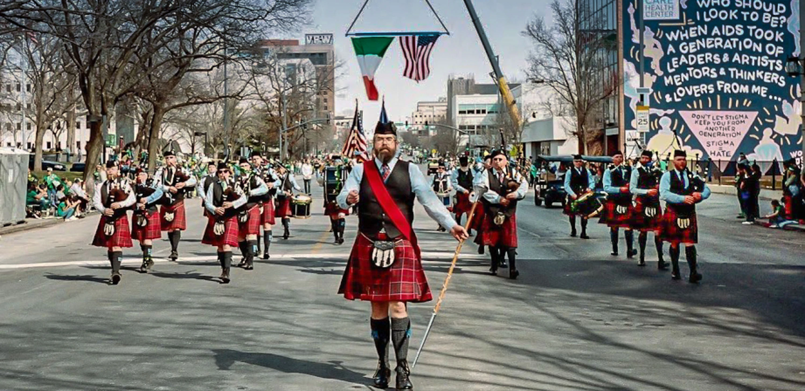

Hire Us
From weddings to sold-out concerts, the Kansas City St. Andrew Pipes and Drums will make your event unforgettable! We have over forty active pipers and drummers of all ages who will assist you in making your private or public engagement truly special. We can work with you to provide a Scottish (or even Irish) flair to your next event, which is sure to leave you and your guests with fond memories for years to come!
As Kansas City's premier pipe band, we are proud to provide award-winning individual bagpipers, small ensembles, or even a full band for your next event in a number of price ranges as your taste and resources fancy. We also have affiliations with Scottish Highland dancers, Irish step dancers, and Celtic folk bands should you want to create a one-of-a-kind treat for your guests.
Solo Pipers are appropriate for weddings, birthday parties, funerals, dinner parties, dedication ceremonies, memorial ceremonies, anniversary parties, and just about anything else you can think of! Please inquire about hiring a drummer to accompany the piper, as this adds another powerful dimension to the music.
Ensembles, which usually consist of two to four bagpipers or two to three pipers and a drummer, are well suited for smaller events, especially when space is a strong consideration. This size of group would be ideal for your next business luncheon, your wedding reception, golf tournaments, or even your next party, but of course these are only a few ideas. The possibilities are endless!
A Mini Band consists of four pipers and two drummers, and is appropriate for medium sized events where the 'feel' of a larger band is required, but where space or volume is a hindrance to hosting a Full Band. This option gives a 'fuller' sound and appearance than the Ensemble option, but would be equally well tailored for such occasions.
A Full Band is our most visually and audibly impressive option. It consists of eight to ten pipers and three to four drummers. Often we provide more performers, but due to possible scheduling conflicts of individual band members, this is sometimes not possible. The above numbers are more than adequate to provide the unmistakable presence of a full pipe band. This option is optimal for larger events such as university commencements, concerts, dinners, military events, parades, and larger corporate events. But don't let the scope of this option hinder your final decision; we are happy to offer this option for weddings and other smaller events if you want a truly once in a life-time experience!*
For performances our members appear in traditional highland dress which consists of: Scottish kilt, sporran, ghillie brogues (shoes), daywear jacket/vest, shirt, tie, and glengarry (hat). Our uniform kilt is the MacDonnell of Keppoch tartan pictured below.**
Feel free to contact us regarding any questions you might have.
I am positive that you will be pleased with our level of professional customer care and I sincerely hope that you will draw on our outstanding services for your next engagement!
* Please allow a minimum of one to two months in advance to arrange for the Full Band option. Sometimes more or less time will be necessary to make arrangements depending upon the band schedule and personal scheduling issues.
** Members of the full band and small groups will appear in this uniform; however, solo performers may choose to wear their own (family) kilts and highland dress accessories for such events at their leisure.